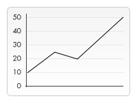
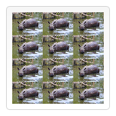
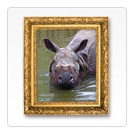

Until now we have created our own shapes and applied styles to them. One of the more exciting features of <canvas> is the ability to use images. These can be used to do dynamic photo compositing or as backdrops of graphs, for sprites in games, and so forth. External images can be used in any format supported by the browser, such as PNG, GIF, or JPEG. You can even use the image produced by other canvas elements on the same page as the source!
Importing images into a canvas is basically a two step process:
- Get a reference to an
HTMLImageElementobject or to another canvas element as a source. It is also possible to use images by providing a URL. - Draw the image on the canvas using the
drawImage()function.
Let's take a look at how to do this.
Getting images to draw
The canvas API is able to use any of the following data types as an image source:
HTMLImageElement- These are images created using the
Image()constructor, as well as any<img>element. HTMLVideoElement- Using an HTML
<video>element as your image source grabs the current frame from the video and uses it as an image. HTMLCanvasElement- You can use another
<canvas>element as your image source.
These sources are collectively referred to by the type CanvasImageSource.
There are several ways to get images for use on a canvas.
Using images from the same page
We can obtain a reference to images on the same page as the canvas by using one of:
- The
document.imagescollection - The
document.getElementsByTagName()method - If you know the ID of the specific image you wish to use, you can use
document.getElementById()to retrieve that specific image
Using images from other domains
Using the crossorigin attribute of an <img> element (reflected by the HTMLImageElement.crossOrigin property), you can request permission to load an image from another domain for use in your call to drawImage(). If the hosting domain permits cross-domain access to the image, the image can be used in your canvas without tainting it; otherwise using the image will taint the canvas.
Using other canvas elements
Just as with normal images, we access other canvas elements using either the document.getElementsByTagName() or document.getElementById() method. Be sure you've drawn something to the source canvas before using it in your target canvas.
One of the more practical uses of this would be to use a second canvas element as a thumbnail view of the other larger canvas.
Creating an image from scratch
Another option is to create new HTMLImageElement objects in our script. To do this, you can use the convenient Image() constructor:
var img = new Image(); // Create new img element img.src = 'myImage.png'; // Set source path
When this script gets executed, the image starts loading.
If you try to call drawImage() before the image has finished loading, it won't do anything (or, in older browsers, may even throw an exception). So you need to be sure to use the load event so you don't try this before the image has loaded:
var img = new Image(); // Create new img element
img.addEventListener("load", function() {
// execute drawImage statements here
}, false);
img.src = 'myImage.png'; // Set source path
If you're only using one external image this can be a good approach, but once you need to track more than one we need to resort to something more clever. It's beyond the scope of this tutorial to look at image pre-loading tactics, but you should keep that in mind.
Embedding an image via data: URL
Another possible way to include images is via the data: url. Data URLs allow you to completely define an image as a Base64 encoded string of characters directly in your code.
var img = new Image(); // Create new img element img.src = 'data:image/gif;base64,R0lGODlhCwALAIAAAAAA3pn/ZiH5BAEAAAEALAAAAAALAAsAAAIUhA+hkcuO4lmNVindo7qyrIXiGBYAOw==';
One advantage of data URLs is that the resulting image is available immediately without another round trip to the server. Another potential advantage is that it is also possible to encapsulate in one file all of your CSS, JavaScript, HTML, and images, making it more portable to other locations.
Some disadvantages of this method are that your image is not cached, and for larger images the encoded url can become quite long.
Using frames from a video
You can also use frames from a video being presented by a <video> element (even if the video is not visible). For example, if you have a <video> element with the ID "myvideo", you can do this:
function getMyVideo() {
var canvas = document.getElementById('canvas');
if (canvas.getContext) {
var ctx = canvas.getContext('2d');
return document.getElementById('myvideo');
}
}
This returns the HTMLVideoElement object for the video, which, as covered earlier, is one of the objects that can be used as a CanvasImageSource.
Drawing images
Once we have a reference to our source image object we can use the drawImage() method to render it to the canvas. As we will see later the drawImage() method is overloaded and has several variants. In its most basic form it looks like this:
drawImage(image, x, y)- Draws the
CanvasImageSourcespecified by theimageparameter at the coordinates (x,y).
SVG images must specify a width and height in the root <svg> element.
Example: A simple line graph
In the following example, we will use an external image as the backdrop for a small line graph. Using backdrops can make your script considerably smaller because we can avoid the need for code to generate the background. In this example, we're only using one image, so I use the image object's load event handler to execute the drawing statements. The drawImage() method places the backdrop at the coordinate (0, 0), which is the top-left corner of the canvas.
<html> <body onload="draw();"> <canvas id="canvas" width="180" height="150"></canvas> </body> </html>
function draw() {
var ctx = document.getElementById('canvas').getContext('2d');
var img = new Image();
img.onload = function(){
ctx.drawImage(img,0,0);
ctx.beginPath();
ctx.moveTo(30,96);
ctx.lineTo(70,66);
ctx.lineTo(103,76);
ctx.lineTo(170,15);
ctx.stroke();
};
img.src = 'https://mdn.mozillademos.org/files/5395/backdrop.png';
}
The resulting graph looks like this:
| Screenshot | Live sample |
|---|---|
|  |
Scaling
The second variant of the drawImage() method adds two new parameters and lets us place scaled images on the canvas.
drawImage(image, x, y, width, height)- This adds the
widthandheightparameters, which indicate the size to which to scale the image when drawing it onto the canvas.
Example: Tiling an image
In this example, we'll use an image as a wallpaper and repeat it several times on the canvas. This is done simply by looping and placing the scaled images at different positions. In the code below, the first for loop iterates over the rows. The second for loop iterates over the columns. The image is scaled to one third of its original size, which is 50x38 pixels.
Note: Images can become blurry when scaling up or grainy if they're scaled down too much. Scaling is probably best not done if you've got some text in it which needs to remain legible.
<html> <body onload="draw();"> <canvas id="canvas" width="150" height="150"></canvas> </body> </html>
function draw() {
var ctx = document.getElementById('canvas').getContext('2d');
var img = new Image();
img.onload = function(){
for (var i=0;i<4;i++){
for (var j=0;j<3;j++){
ctx.drawImage(img,j*50,i*38,50,38);
}
}
};
img.src = 'https://mdn.mozillademos.org/files/5397/rhino.jpg';
}
The resulting canvas looks like this:
| Screenshot | Live sample |
|---|---|
|  |
Slicing
The third and last variant of the drawImage() method has eight parameters in addition to the image source. It lets us cut out a section of the source image, then scale and draw it on our canvas.
drawImage(image, sx, sy, sWidth, sHeight, dx, dy, dWidth, dHeight)- Given an
image, this function takes the area of the source image specified by the rectangle whose top-left corner is (sx,sy) and whose width and height aresWidthandsHeightand draws it into the canvas, placing it on the canvas at (dx,dy) and scaling it to the size specified bydWidthanddHeight.
 To really understand what this does, it may help to look at the image to the right. The first four parameters define the location and size of the slice on the source image. The last four parameters define the rectangle into which to draw the image on the destination canvas.
To really understand what this does, it may help to look at the image to the right. The first four parameters define the location and size of the slice on the source image. The last four parameters define the rectangle into which to draw the image on the destination canvas.
Slicing can be a useful tool when you want to make compositions. You could have all elements in a single image file and use this method to composite a complete drawing. For instance, if you want to make a chart you could have a PNG image containing all the necessary text in a single file and depending on your data could change the scale of your chart fairly easily. Another advantage is that you don't need to load every image individually, which can improve load performance.
Example: Framing an image
In this example, we'll use the same rhino as in the previous example, but we'll slice out its head and composite it into a picture frame. The picture frame image is a 24-bit PNG which includes a drop shadow. Because 24-bit PNG images include a full 8-bit alpha channel, unlike GIF and 8-bit PNG images, it can be placed onto any background without worrying about a matte color.
<html>
<body onload="draw();">
<canvas id="canvas" width="150" height="150"></canvas>
<div style="display:none;">
<img id="source" src="https://mdn.mozillademos.org/files/5397/rhino.jpg" width="300" height="227">
<img id="frame" src="https://mdn.mozillademos.org/files/242/Canvas_picture_frame.png" width="132" height="150">
</div>
</body>
</html>
function draw() {
var canvas = document.getElementById('canvas');
var ctx = canvas.getContext('2d');
// Draw slice
ctx.drawImage(document.getElementById('source'),
33, 71, 104, 124, 21, 20, 87, 104);
// Draw frame
ctx.drawImage(document.getElementById('frame'),0,0);
}
We took a different approach to loading the images this time. Instead of loading them by creating new HTMLImageElement objects, we included them as <img> tags directly in our HTML source and retrieved the images from those. The images are hidden from output by setting the CSS property display to none for those images.
| Screenshot | Live sample |
|---|---|
|  |
The script itself is very simple. Each <img> is assigned an ID attribute, which makes them easy to select using document.getElementById(). We then simply use drawImage() to slice the rhino out of the first image and scale him onto the canvas, then draw the frame on top using a second drawImage() call.
Art gallery example
In the final example of this chapter, we'll build a little art gallery. The gallery consists of a table containing several images. When the page is loaded, a <canvas> element is inserted for each image and a frame is drawn around it.
In this case, every image has a fixed width and height, as does the frame that's drawn around them. You could enhance the script so that it uses the image's width and height to make the frame fit perfectly around it.
The code below should be self-explanatory. We loop through the document.images container and add new canvas elements accordingly. Probably the only thing to note, for those not so familiar with the DOM, is the use of the Node.insertBefore method. insertBefore() is a method of the parent node (a table cell) of the element (the image) before which we want to insert our new node (the canvas element).
<html>
<body onload="draw();">
<table>
<tr>
<td><img src="https://mdn.mozillademos.org/files/5399/gallery_1.jpg"></td>
<td><img src="https://mdn.mozillademos.org/files/5401/gallery_2.jpg"></td>
<td><img src="https://mdn.mozillademos.org/files/5403/gallery_3.jpg"></td>
<td><img src="https://mdn.mozillademos.org/files/5405/gallery_4.jpg"></td>
</tr>
<tr>
<td><img src="https://mdn.mozillademos.org/files/5407/gallery_5.jpg"></td>
<td><img src="https://mdn.mozillademos.org/files/5409/gallery_6.jpg"></td>
<td><img src="https://mdn.mozillademos.org/files/5411/gallery_7.jpg"></td>
<td><img src="https://mdn.mozillademos.org/files/5413/gallery_8.jpg"></td>
</tr>
</table>
<img id="frame" src="https://mdn.mozillademos.org/files/242/Canvas_picture_frame.png" width="132" height="150">
</body>
</html>
And here's some CSS to make things look nice:
body {
background: 0 -100px repeat-x url(https://mdn.mozillademos.org/files/5415/bg_gallery.png) #4F191A;
margin: 10px;
}
img {
display: none;
}
table {
margin: 0 auto;
}
td {
padding: 15px;
}
Tying it all together is the JavaScript to draw our framed images:
function draw() {
// Loop through all images
for (var i=0;i<document.images.length;i++){
// Don't add a canvas for the frame image
if (document.images[i].getAttribute('id')!='frame'){
// Create canvas element
canvas = document.createElement('canvas');
canvas.setAttribute('width',132);
canvas.setAttribute('height',150);
// Insert before the image
document.images[i].parentNode.insertBefore(canvas,document.images[i]);
ctx = canvas.getContext('2d');
// Draw image to canvas
ctx.drawImage(document.images[i],15,20);
// Add frame
ctx.drawImage(document.getElementById('frame'),0,0);
}
}
}
Controlling image scaling behavior
As mentioned previously, scaling images can result in fuzzy or blocky artifacts due to the scaling process. You can use the drawing context's imageSmoothingEnabled property to control the use of image smoothing algorithms when scaling images within your context. By default, this is true, meaning images will be smoothed when scaled. You can disable this feature like this:
ctx.mozImageSmoothingEnabled = false; ctx.webkitImageSmoothingEnabled = false; ctx.msImageSmoothingEnabled = false; ctx.imageSmoothingEnabled = false;